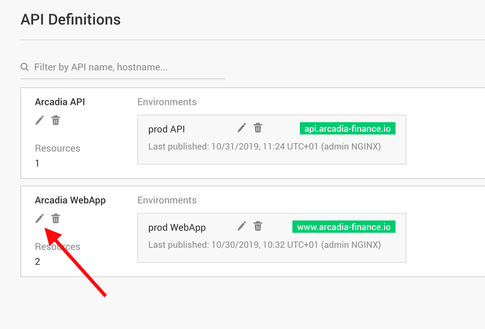
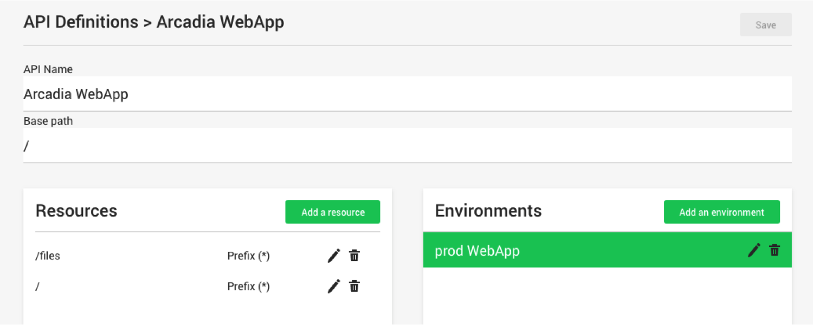
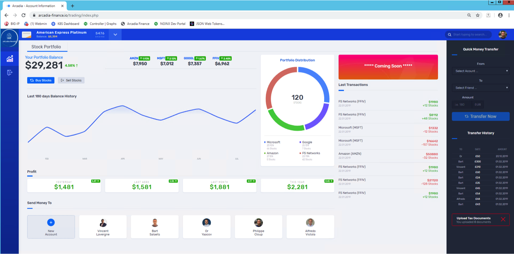
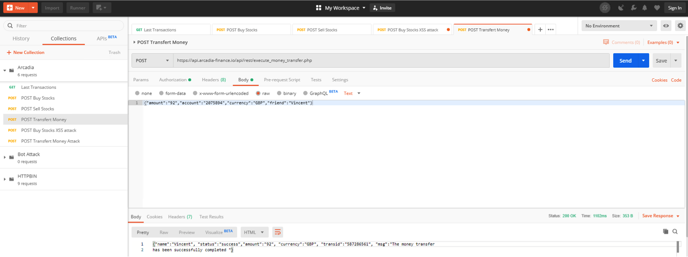
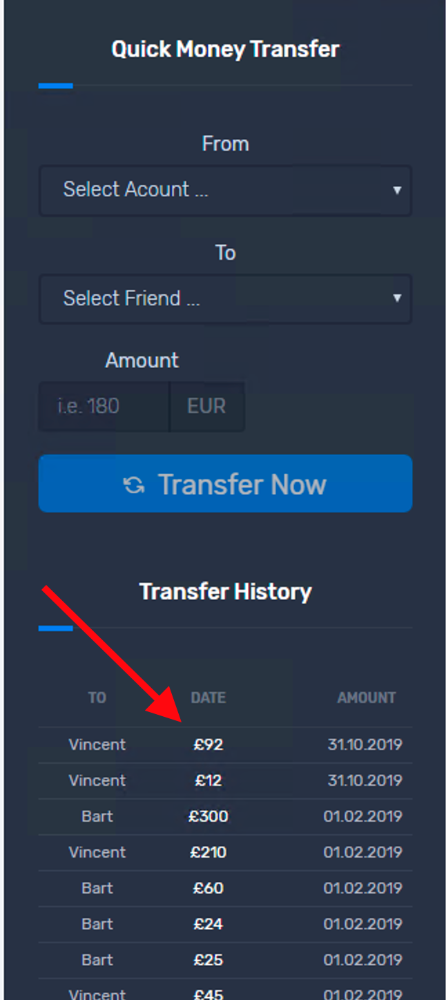

Lab 2.2 - Add a new microservice in the API definitions¶
1. To verify Upstream configuration, click “Upstream Group”, and then click edit icon for app2
{kind=link}
Note
This App2 is a new app developed by DevOps and available on the FQDN app2.example.com and port 30362. This microservice is running in Kubernetes. Now we need to publish this new microservice on the API Gateway.
2. Add app2 to API definition. Click “API Definitions”, then click the edit icon under “Arcadia WebApp”
 {kind=link}
{kind=link}
Note
You can notice only 2 microservices are published. The / (main App) and the /files (Back End DB)
Click “Add Resource”, put /api into “Path”, then click “Save”
Click edit icon for “prod WebApp” in “Environment”
{kind=link}
{kind=link}
- Click “Add Route”. Select /api in “Resource”, and app2 in “Upstream Group”. Click SAVE.
{kind=link}
6. Click “Publish”. A publish successful message will appear at top, once publish is completed.
{kind=link}
7. Verify app2 is running in the Web Application. RDP into Windows Jumphost, and refresh the browser session for the application. The app2 (Quick Money Transfer) appears. Do a money transfer by selecting an account in “From”, a person in “To”, fill a number in “Amount”, and click “Transfer Now”; you will see a successful message, and the money transfer transaction will show in “Transfer history”

Note
You did you first API call from the Arcadia Web Application :) Behind the scene, when you click on Transfer Now, browser makes an API Call.
8. Repeat the same configuration for Arcadia API
Go back to API Definition and click on edit icon for “Arcadia API”
{kind=link}
Note
You can notice there is only one Resource at the moment, and this resource is “explicit” with the full URI.
Click “Add Resource”, and put /api in “Path”, and click “Save”
Click edit button for “prod API” in Environment, click “Add Route”, select /api for resource, select app2 for “Upsteam Group”, and click “Save”
Click “Publish”, and wait for publishing to complete
{kind=link}
{kind=link}
Note
With these steps, you added a new “route” for the API /api. The API and the Web Application are separated at the BIG-IP level. It is 2 different VS and 2 different Pool. That why you created 2 different API Definitions.
9. Verify API call via Postman. RDP into Windows Jumphost, launch Postman, open “Arcadia” collection, select “POST Transfer Money”. Review the body and click “Send”. You should see successful message in response.

Go back to the Web Application, reload the page, and check if the transaction is shown in the Money Transfer app.

{kind=link}